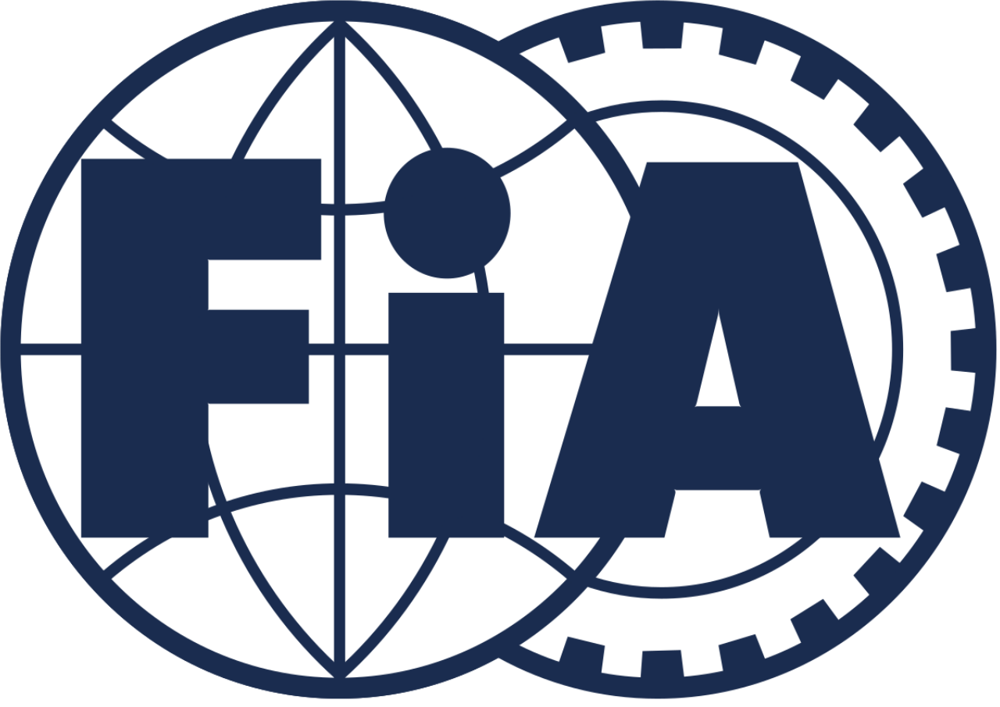

A FIA Formula–2 bajnokság egy formaautó-versenysorozat, ami 2017-ben indult a megszüntetett GP2 utódjaként, így most ez számít a Formula–1 „előszobájának”. Péntekenként kezdődnek a versenyhétvégék, ekkor a pilótáknak egy 45 perces szabadedzés áll rendelkezésükre a 30 perces időmérő edzés előtt. Utóbbi dönt a szombaton rajtoló futam rajtsorrendjéről. A szombati futam során minden versenyzőnek kötelező egyszer kereket cserélnie. Vasárnap úgynevezett sprintversenyt rendeznek, ennek rajtsorrendjét pedig az előző napi futam befutója határozza meg, az elsőtől a nyolcadik helyezettig vasárnap fordított sorrendben rajtolnak el, így tehát a szombati főverseny nyolcadikja a pole-pozícióból, míg annak győztese a nyolcadik helyről. Itt nem kötelező a bokszkiállás.
A versenysorozatot azért hozták létre, hogy egy minden csapat számára megfizethető bajnokság induljon, tökéletes felkészülést biztosítva a Formula–1-es pályafutásra. Az F2 szervezőbizottsága kötelezővé tette, hogy az összes csapat ugyanazt a futóművet, motort és gumiabroncs-szállítót használja. A versenyek főleg az európai versenypályákon zajlanak, de az első, 2017-es szezonban a Bahrain International Circuit aszfaltcsíkon és a Yas Marina Circuit versenypályán is kifutnak a pályára a 2017-es Formula–1 világbajnokság betétfutama volt.
 A Nemzetközi Automobil Szövetség (franciául: Fédération Internationale de l’Automobile, rövidítve FIA) a 19. század végén elterjedt és egyre gyakoribb autóversenyek nemzetek közötti méretűvé válásával szükségessé vált egy olyan szervezet létrehozása amelyik szabályozza az autóversenyeket.
Autó specifikációk és alap szabályok
A 2018-tól használt autó Motortérfogat: 3,4 L DOHC V6 Teljesítmény: 620 LE Aspiráció: Turbófeltöltő Sebességváltó: 6 sebességes lapátváltó Kormányzás: fogaskerekes Súly: 755 kg Hossz: 5224 mm Szélesség: 1900 mm Tengelytávolság: 3135 mm Glória (Halo): Van Üzemanyag: Elf LMS 101,6 RON ólommentes Üzemanyag-kapacitás: 125 liter (33 gallon) Gumiabroncs: Pirelli P Zero, félig esős és esősmaiként.